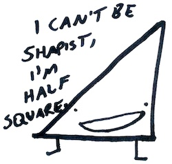

Y'know, it's tough being a triangle in a square world. 
Sure, most squares are glad you're around. But it's never quite comfortable. Speaking as a triangle, I'd much rather be around both triangles and squares!
Really, we're only uncomfortable when an overwhelming majority of shapes around us are different. I mean, we don't run screaming, we're not shapist or anything, but it's tough when you have nothing in common with most of the shapes around you. Given the opportunity to move somewhere else, well, I speak for us all when I say we'd rather be in a 50/50 sort of situation.
Being in the minority is fine. If it's 60/40, I can handle that! Better than being in a boring neighborhood of all triangles! And all shapes are basically the same. We only want to move if less than a third (33%) of our neighbors are like us.
With that one rule, what actually happens to a large shape society?
And the result... near-complete separation.
Well, sometimes a neighborhood just becomes a square neighborhood, and it's not their fault if no triangles seem to want to stick around. And a triangular neighborhood would welcome a square, but we can't help it if squares aren't interested.
Next is a larger simulation, where you can still move shapes by hand, or let unhappy shapes automatically move towards more comfortable locations. You can also see a graph that measures, on average, what percentage of a polygon's neighbors are like themselves.
What is up with that? These are good shapes, nice shapes. So why is it that even when every individual seems like a model citizen, with just a slight preference to move only if they're overwhelmingly surrounded by shapes unlike them, why does shape life end up so boring?
Even with little individual bias, you can end up with massive institutional bias.
Equality is not an equilibrium. It's unstable, and tends towards segregation. So what is a shape society to do? What if the shapes had a lower individual bias, or maybe higher?
Notice how much more segregated things get when you increase the bias beyond 33%. What if shapes were unhappy if less than 50% of their neighbors were like them? It might seem reasonable for a shape to prefer not being in the minority!
But if you start with a new random board, at 0% bias, things look pretty good. You might think simply having completely unbiased polygons would fix our segregation problems.
Of course, the real polygon world doesn't start anew with a random shuffling of shapes every day. In the following example, the world starts off stable and segregated, rather than random, but you can still decrease the bias to zero and see what happens.
See what happens? Or rather, what doesn't happen? In the above model, things can only ever stay the same or get worse, even when every single shape citizen is the definition of unbiased.
In a world where bias ever existed, being unbiased isn't enough!
You need active measures to undo the institutional bias. But how?
Hm... y'know, I hear that hanging out only with similar shapes is like, really super boring. All the cool shapes are nonconformists. Yes, if other shapes are too similar to them, the hippest of squares seek more triangles, and the awesomest triangles seek out squares! What happens then?
Woah. Even though each polygon would be okay with having up to 90% of their neighbours like them, this totally segregated community gets totally mixed up! In a good way! In the next interactive bit, let's explore what happens at different levels of bias & nonconformity.
All it takes is a change in the perception of what an acceptable environment looks like. So, fellow shapes, remember it's not about triangles vs squares, and it's not about bias against shapes that don't look like you. It's about deciding what we want the world to look like, and accepting no less.
It might seem uncomfortable at first, and going out on your own can be isolating. But by working together, step by step...
...we can all come together.
Play around! Notice, for example, that it's difficult to maintain a bias much higher than 50% when living in close quarters to other shapes, but that sparsely-populated shapelands allow shapes to comfortably live even with huge bias.
What other conclusions can you discover?